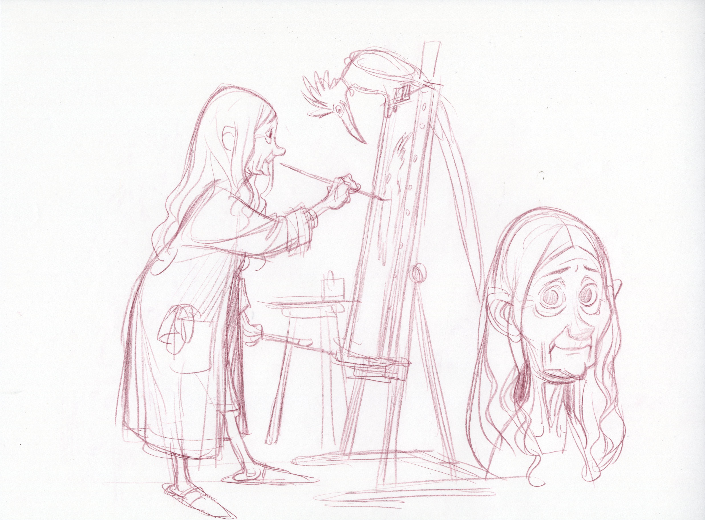
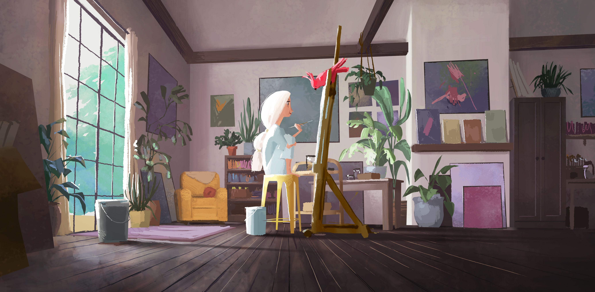

Spiderman 2 Technical Art Reel
▶ Reel Breakdown
Venom
- Face rig
- Hand-sculpted FACS blendshapes for lips/eyes/teeth; joints for jaw/head/tongue; Havok for saliva
- Worked with animation capture data
Scream
- Face rig
- Rapid, stripped-down rig based on Venom's rig
Metahuman Development
- Manipulated to work with multiple body archetypes (civ female/male, enemy female/male, enemy heavy)
- Compatible with open world, gameplay, and cinematics
General Face Rigging / Tools
- Tools to warp facial hair to fit all face types
- Rigs for spline hair
- Collaboration and ingestion of 3rd-party facial rigs from 3Lateral
- Maintenance to hide the seam between separate body and head rigs
- Forking head rigs to work with different outfits/skeletons
- Warped rigs to work on heroically proportioned enemies
Lizard
- Spike rigging to prevent Spider-Man's suit from getting impaled
Not featured in the reel, and shoutouts
- None of this was possible without the talented team at Insomniac — especially the Tech Animation team
- Initial face rigging pipeline built by Noah Alzayer
- Initial Scream shapes sculpted by Matthew Lefferts
- Creative rigs for cut content
- Rapid rig prototypes for internal game jam
- Collaborated with Epic Games on an early version of MetaHuman
- Maintenance of legacy head rigs from multiple games and different studios
- Added neck rigging component
- Guided animation workflows for complicated characters:
- Pose libraries
- Animation bibles
- Patch notes for each rigging update
- Video breakdowns
- Scrambled to put together rigs for the 2021 announcement trailer
- Assisted in refactoring the internal modular rigging system (tool built by Alan Weider)
- Multiple Simplygon recipes to maintain head seam across LODs
- Guinea pig for new internal face rigging process (tool built by Josh DiCarlo)
- Added functionality for the scene assembly tool to enable loading/unloading/swapping of face rigs
- Authored most steps in the internal rig validation tool (tool built by Daniel McCrummen)
Ratchet & Clank: Rift Apart Technical Art Reel
▶ Reel Breakdown
I was welcomed onto this project late into production and my tasks were to evaluate the main characters, Ratchet and Rivet, and help get them across the finish line.
Reel Breakdown:
- Ratchet face polish
- Armor rigging/workflow (optimized process so individual Character TDs could absorb all armors)
- Rivet face polish
Autodesk Bifrost Rigging Modules Tutorial Series
▶ Playlist Description
Collaborated with Autodesk to design and implement a modular biped rig built with Bifrost Rigging Modules, showcasing procedural workflows and advanced animation controls. The resulting tutorial series demonstrates how to create, customize, and integrate Bifrost rigging modules. Hopefully empowering future artists and technical teams to explore a new procedural approach to rigging and animation.
Unreal Engine Rigging & Animation Exploration
▶ Project Description
I created this fan-art of Shark Kitty to test Unreal Engine 5.5’s new animation and rigging features. Using Maya for modeling and morph targets, Substance and GIMP for texturing, and Unreal for materials, rigging, and animation, I explored the modular Control Rig system’s potential and limits. Specifically how far I could push it considering it's limited flexibility for extreme squash and stretch. To meet mobile skeleton constraints (<75 bones), I built custom rig components and designed a custom 3-bone IK solution that maintained consistent femur and tarsal alignment, including a procedural secondary IK chain driven by iterative “For Loop” nodes. This project was a deep dive into Unreal’s evolving rigging ecosystem. While powerful yet it's still maturing. Despite some friction with vertex selection and morph-target stacking, the process showcased Unreal’s promise as a standalone DCC for animation. Many thanks to Peter Sandeman and Warren Wang for their help, and full credit to Yogin, the original creator of Shark Kitty.
Animated Short Look Test
▶ Look Test Description
While at Dreamworks Animation, I had a once in a lifetime opportunity to direct a short that was very close to my heart. One day I hope to have the skillset to finish this project. I do want to celebrate the people who were such a blessing to work with. This look test was created for the short film, exploring the visual style and character rendering. Special thanks to the talented artists who brought this to life:
Modeling: Hyun Huh
LookDev & FX: Yancy Lindquist

Title Card by Ramone Zibach
Line art by Rune Bennicke
Painting by Brian Wang
Credits
- Jeffrey Hermann
- Jennifer Howell
- Chris deFaria
- Jon Schmidt
- Matthew Tucker
- Raymond Zibach
- Hamish Grieve
- Brian Wang
- Brendan Murphy
- Kirsten Kawamura
- Rune Bennicke
- Patrick Walsh
- Matt Baer
- Jeff Budsberg
- Jill Hopper
- Joe Moshier
- Chris Meinen
- Andy Erekson
- Bill Otsuka
- Hyun Huh
- Stan Seo
- Yancy Lindquist
- CK Horness
- James Ryan
- Mark Fitzgerald
- Jay Bixsen
- Sean Choi
- Orlando Duenas
- Arin Mathern
- Meghan Shearer
- Damon Obeirne
Bad Guys Rigging Lead Showreel
▶ Reel Breakdown
As the Body Rigging Lead for The Bad Guys, my responsibilities were to establish standards across the show, help develop techniques to achieve the film’s distinctive stylized look, and build workflows that artists could adopt to deliver high-quality work efficiently. A good example of this was a workflow for integrating wardrobe seamlessly with stylized wrinkles, published by the rigging team. Beyond the technical aspects, one of the most rewarding parts of the role was mentoring artists. Helping them expand their skills, get them confident in using proprietary software, and contribute their own creative problem-solving to the pipeline.
Reel Breakdown:
- Wolf Body
- Eyeliner and eye stunt effects geometry/rig system for all characters across the film
- Police Chief Body
- Shark Face, Body
Trolls World Tour Rigging Lead Showreel
▶ Reel Breakdown
As a rigging lead on Trolls World Tour I managed character and prop setup, including rigging, weighting, and skinning, increasing delivery speed by 200%, saving ~50 man-weeks. I also had the opportunity to rig approximately 74 bodies, faces, creatures and props. That ended up being about ~0.95 rigs a week. Although that doesn’t include the hundreds of hair/wardrobe assets I installed as well (I didn't have a good way to figure that number out).